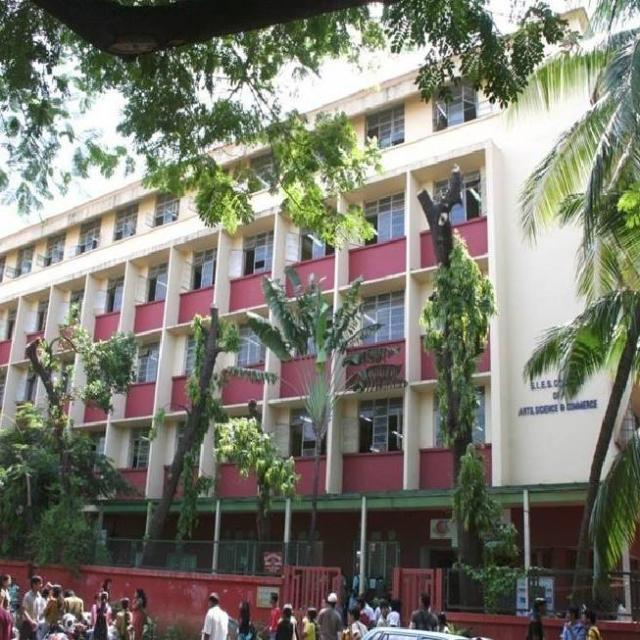

SIES College of Arts, Science and Commerce is formerly known as South Indian Educaion Society. It is an AUTONOMOUS college. It is located at Jain Society, Near Guru krupa hotel ,SION West. It is located at five minutes walking distance from railway station as well as bus stand. It was started in the year of 1960.
Our college is producing best results in the city.We are proud to have all the toppers in SSC Examination from reputed schools taking admission in our college and strengthening their base in academics. SIES has been ranked as the topmost colleges in Mumbai. The SIES was awarded as Best College by India Today. Also it is well equipped with library comprising maximum books and a huge reading hall. Similarly laboratory facilities for science and computer subjects is provided. It facilitates a student centered environment where the intellectual, cultural, social ,physical and recreational needs of the students are fulfilled. It has a very good infrastructure and it is well maintained.
